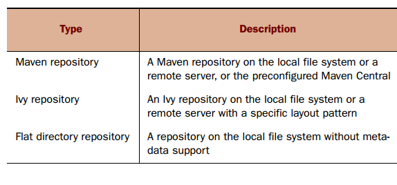
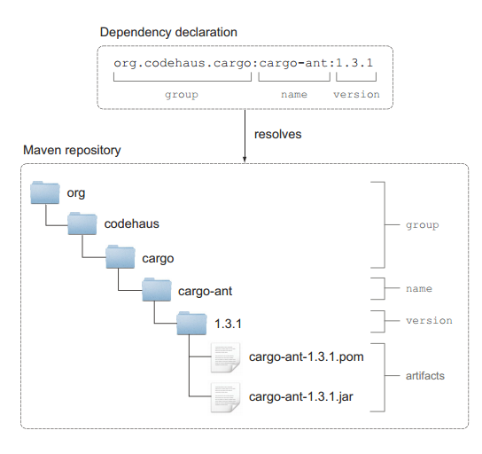

配置远程仓库
Gradle支持下面三种不同类型的仓库：

下图是配置不同仓库对应的Gradle API：

下面以Maven仓库来介绍，Maven仓库是Java项目中使用最为广泛的一个仓库，库文件一般是以JAR文件的形式存在，用XML(POM文件)来来描述库的元数据和它的传递依赖。所有的库文件都存储在仓库的指定位置，当你在构建脚本中声明了依赖时，这些属性用来找到库文件在仓库中的准确位置。group属性标识了Maven仓库中的一个子目录，下图展示了Cargo依赖属性是怎么对应到仓库中的文件的：

RepositoryHandler接口提供了两个方法来定义Maven仓库，mavenCentral方法添加一个指向仓库列表的引用，mavenLocal方法引用你文件系统中的本地Maven仓库。
添加Maven仓库
要使用Maven仓库你只需要调用mavenCentral方法，如下所示：
repositories {
mavenCentral()
}
添加本地仓库
本地仓库默认在
repositories {
mavenLocal()
}
添加自定义Maven仓库
如果指定的依赖不存在与Maven仓库或者你想通过建立自己的企业仓库来确保可靠性，你可以使用自定义的仓库。仓库管理器允许你使用Maven布局来配置一个仓库，这意味着你要遵守artifact的存储模式。你也可以添加验证凭证来提供访问权限，Gradle的API提供两种方法配置自定义的仓库：maven()和mavenRepo()。下面这段代码添加了一个自定义的仓库，如果Maven仓库中不存在相应的库会从自定义仓库中查找：
repositories {
mavenCentral()
maven {
name 'Custom Maven Repository',
url 'http://repository.forge.cloudbees.com/release/')
}
}